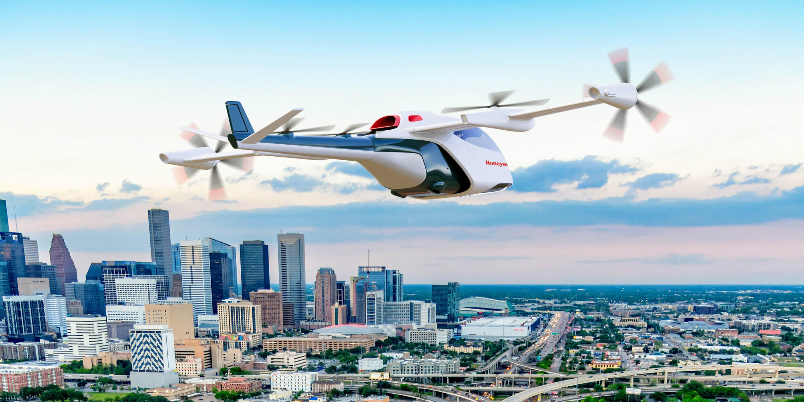
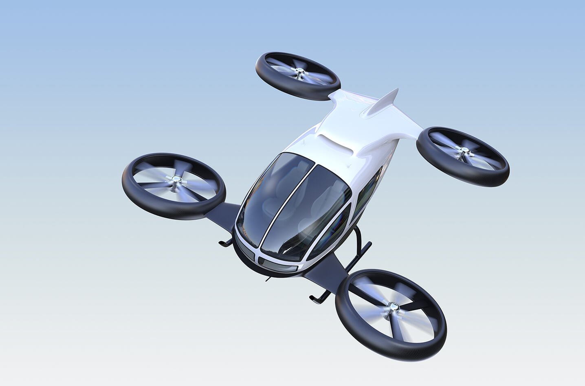
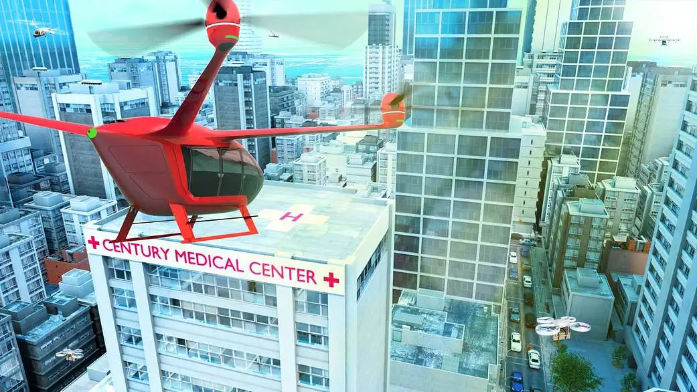
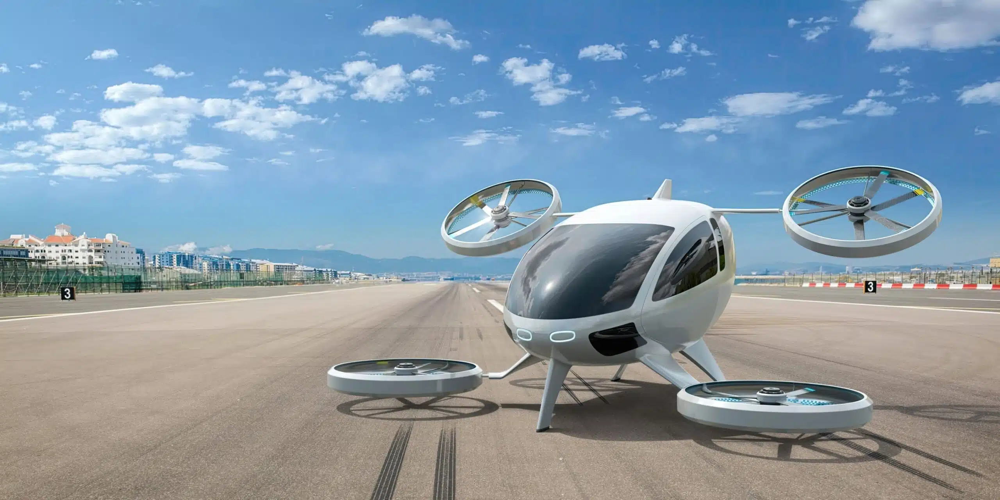

BY: MARIA ALONSO, ET AL.
Advanced air mobility (AAM) is spearheading innovative new technology in the aviation industry. Despite a strong history of automation, the sector is yet to create a clear taxonomy towards full autonomy, which is necessary for all stakeholders to agree on the required standards and regulations. This white paper supports a spectrum of human in-, on- and over-the-loop, with increasing levels of remote control and numbers of vehicles handled even as direct human intervention and responsibility for all operations decreases.
Application opportunities for AAM are manifold across passenger and non-passenger (goods and services) transport clusters. Use cases thereby stretch across various geographic expansions, from urban to regional. Behind respective operationalization, two driving stakeholder groups can be differentiated: private (pure commercial focus) and public-private (societal focus with commercial viability as the baseline). To initially adopt and later scale these opportunities, three categories of enablers are vital: social acceptance, operational feasibility and financial viability.
The degree of importance of each category of enablers depends on the use case. For the development of passenger-related use cases, social acceptance is most crucial. Non-passenger applications will thrive through financial viability best achieved by increased levels of automation. AAM adoption is expected to benefit various industries (e.g. healthcare: high speed, better coverage and accessibility); different geographies (e.g. remote areas: better accessibility and lower risk in dangerous surroundings); and people (e.g. (sub)urban transit: faster, increased convenience and more pedestrian space). Some use cases are already being piloted in confined regulatory sandboxes designed to test and derive best practices for the mid-term.
Nevertheless, the ecosystem is not yet ready for large-scale adoption. More cohesive regulations need to be put in place to certify vehicles and autonomous operations. Digital infrastructure needs to be developed to orchestrate seamless airspace operations, while wider physical infrastructure buildup is required to integrate AAM into the existing transport infrastructure.
Looking ahead, AAM will democratize and enable higher degrees of automation for commercial aviation. Yet, many obstacles are yet to be overcome on the road to wider adoption and autonomy. The industry will benefit from implementation roadmaps that accelerate the rollout of AAM, enabling a more prosperous future for the sector.
Innovations such as artificial intelligence, cloud computing, 5G (fifth generation telecommunications), smart infrastructure, electric motors and sensor technologies are rapidly disrupting various industries and sectors of the global economy. Aviation is no different. Despite it being a highly regulated industry, a new industry branch is embedding numerous innovations in the air: advanced air mobility.
Advanced air mobility (AAM) is a broad concept, a playground for innovation that addresses varied topics such as levels of automation, electric aircraft, novel materials and AI route optimization. According to the US Federal Aviation Administration (FAA), advanced air mobility is “an umbrella term for aircraft that are likely highly automated and electric”. This industry branch is still in the research and development (R&D) stage, which allows for strong innovation in the coming years. At the same time, AAM is far enough ahead to consider it a reality and able to already make an impact in the short term.
The future of AAM is electric and is leveraging increased levels of automation. The electric engines of these aircraft support the sector’s path to reach net-zero by 2050 despite the rapid increase in air travel demand (an estimated 40% increase in the number of flights compared to 2019). Electric engines are also quieter than traditional propulsion engines, contributing to noise reduction.
Autonomous capabilities enabling unmanned or remotely supervised operations can help the aviation sector in several ways. They can help address the current shortage of pilots driven by the post-COVID rebound in travel, which is expected to accentuate in the near future (Airbus and Boeing estimate between 585,0005 and 649,0006 new pilots will be needed by 2040). Autonomy will also make the business models related to AAM operations more robust. The caveat is: the autonomy timeline is still uncertain. Currently, tasks in conventional aircraft are automated to a high degree, but several additional steps are needed to make these uncrewed operations a reality.
In order to enable these unmanned or remotely supervised operations, regulation and public acceptance will need to keep pace with the rapid technological developments. All stakeholders must appreciate the positive societal impact that AAM can have in a wide variety of sectors and geographies. This impact can be leveraged with different stages of automated operations on board. This article focuses first on the wide range of AAM use cases. It then highlights key factors to enable further developments and deployments, and areas where the public and private sectors need to work together. Finally, it zooms into three important, early-adopter sectors that are expected to propel the sector further.
SYSTEMATIZING AAM USE CASES
Different lenses can be applied when clustering AAM use cases. Figure 2 clusters use cases according to three key categories: the nature of what is transported (people, goods or other uses), the key stakeholder type driving the implementation (private or public-private), and the geography where the operations take place (urban, suburban rural or regional).
The first category of use cases, organized by the nature of what is transported, comprises three main clusters: passenger transport, cargo transport and other services (the final category providing a service rather than transporting people or goods from point a to point b). For the development of passenger-related use cases, social acceptance will be key. As a result, it is expected that increased levels of automation will only be achieved well after 2030. Automation is expected to be taken up more rapidly for the other two categories, which will also rely on autonomous capabilities to be economically attractive.
These three clusters can be further split according to the interest groups that are key to driving the use-cases’ commercialization into private-driven and public-private driven. Private-driven use cases will require a robust business model with strict emphasis on cost efficiency and operational effectiveness to achieve financial viability, so that they can outperform alternative modes when measured through unit economics. Public-private driven use cases will rely on government funding for their financial viability. This public funding would be backed by the strong societal impact that the use case can unlock (e.g. ambulance services).
Last, use cases are mapped according to their geographical scope. As seen in Figure 2, a single use case can have value in various geographical contexts. For example, point-to-point shuttles can operate in an urban environment for transporting passengers from train stations to sports events, as well as in regional settings to enhance connectivity between remote communities and nearby urban centres. Depending on the geographic scope, however, some operational considerations differ, and the associated levels of risk can vary (e.g. the difference between performing operations in remote areas with low population density vs. areas that are densely populated – the latter being riskier due to the larger impact in case of an accident).

Honeywell concept hybrid
electric aircraft designed for
urban air mobility
KEY ENABLING FACTORS
Successful, widespread implementation of AAM use cases over the coming years will be driven by three categories of enablers: social acceptance, operational feasibility and financial viability. Figure 3 outlines the key components of these enabler categories. It simplifies the relationships between enabling factors and, due to clarity reasons, does not illustrate the interdependences among the different components. For example, clear understanding of the positive social and environmental impact of AAM technologies will ensure that both funding and the necessary regulation – for both the AAM aircraft and the surrounding infrastructure – are put in place.
Trust is the first cornerstone of social acceptance, with perceived safety and privacy playing crucial roles. Education and proof of existing capabilities will significantly contribute to this understanding. Beyond establishing trust, achieving social acceptance will be facilitated by a tangible public benefit. This includes deploying AAM instead of more polluting alternatives, and deploying AAM to address current societal challenges, such as improving healthcare or enhancing the inclusivity of remote communities. In order to facilitate adoption, the integration must be seamless for users, providing an intuitive experience that is well-connected with existing systems.
Operational feasibility is also critical for the implementation of AAM. The technology is maturing sufficiently to soon enable safe, reliable and recurrent operations, and many operators anticipate scaling operations before the decade’s end. Regulations must evolve to keep pace to enable fast and reliable certification of new systems and to enable the standardization of the ecosystem. To this end, infrastructure will be key – see Box 2 that zooms in on infrastructure needs.
Finally, financial viability is essential as it not only sustains operations but also attracts the necessary funds for the substantial initial capital expenditures. Not only must the sector demonstrate that the economic model is viable and more effective than existing alternatives, it must also prove that there is sufficient market depth and that the timeline towards commercialization will not be too long. Funding should ideally come from both public and private sectors, as both societal and economic benefits are expected from this technology. This multistakeholder approach is crucial for the longterm success, adoption, and integration of these technologies into mainstream society.
When referring back to the main use-case clusters of Figure 2, the key enablers that unlock passenger transport are different from those that unlock cargo transport and other services. Hence, a split between passenger- and non-passenger use cases seems pertinent when highlighting the enablers of the different use cases.

Electric vertical takeoff
and landing (eVTOL) aircraft
optimized for AAM
The community has identified the following top enablers for passenger use cases:
– Perceived safety and security. Ensuring high levels of safety and increased cybersecurity precautions will enhance public confidence in new AAM systems. Perceived safety will be as relevant as actual safety, highlighting the importance of public acceptance and the need to consider design and user experience implications in AAM development.
– Ground infrastructure. Time savings will be a key value offered for passengers in AAM operations. Ground infrastructure should ensure seamless integration of AAM into the wider transport network as well as incorporate timesaving technologies such as biometrics and automated baggage handling systems.
– Airspace integration alongside digital infrastructure. Both are crucial for scaling operations and for ensuring safety in busy environments such as cities, which are among the first locations where passenger AAM use cases are expected to take off. Operating over busy cities will require multiple obstacle clearances and the handing of restricted areas and microclimates. Regulators and public authorities will need to advance the work on developing new processes and systems to enable autonomous operations over the medium to long term.
The top enablers identified for non-passenger use cases include:
– Unit economics. Wider AAM adoption is enabled through expected efficiency gains over alternative modes. Superior unit economics will however only be achieved if scaling is possible.
– Airspace integration and digital infrastructure. Like for passenger use cases, this aspect remains a key enabler. Unlike for passenger use cases, this driver is important due to the high volume of operations that is expected for non-passenger use cases. High-volume operations will increase complexity for verbal communication, requiring new processes that are most likely to be automated. Otherwise, long-term sector development will be hindered.
– Positive environmental impact. This impact will result from lower CO2 emissions compared to existing alternatives as well as less noise pollution, especially compared to helicopters. Both these benefits can facilitate public acceptance, in line with the evolution of international regulations and the ESG policies of companies.
Healthcare
Healthcare-related use cases, such as transportation of patients, lab samples, organs or medical inventory, are expected to be commercialized first at a large scale. AAM offers cheaper, faster and better coverage of medical services, potentially enabling real-time medical supplies and inventory sharing between facilities. This can reduce the pressure on constrained healthcare capacity for emerging and developed economies. Therefore, these applications receive substantial public support due to their direct impact on healthcare accessibility and efficiency. At the same time, they make the sector more attractive for entrepreneurship as technology is demonstrably used “for good”.
However, scalability, required to offset the high costs of vehicles, infrastructure, new processes and training of personnel, remains a significant challenge for related use cases, putting pressure on financial viability and posing funding challenges for providers. Nevertheless, social benefits can be identified in the short term while economic advantages will likely only materialize in the long term. For example, in case of patient transportation, the economic opportunity varies depending on whether the electrical vertical take-off and landing vehicle is dedicated to replacinghelicopter operations or expanded to replace certain ground ambulance activities.
For every healthcare-related use case, AAM operations will have to be thoroughly integrated into existing medical processes and systems. This requires specific training for healthcare staff on the new technology to avoid operational disruptions. This will also involve specific regulations for the healthcare system, including the construction of aviation corridors and dedicated airspace integration for operators. Additionally, health insurance providers will need to adapt to evaluate coverage options for these new modes of transport.
Medical use cases are paving the way for most other AAM sectors benefitting from its positive societal impact. Emerging economies are likely to roll out these applications on a wider scale first (e.g. India) 11 as they have a higher proportion of underserved areas (with underdeveloped infrastructure and medical supply chains). Notwithstanding this, developed countries will also benefit, e.g. in cases of natural catastrophes.


Logistics for Remote Areas
For logistics, AAM presents transformative opportunities for both populated areas (e.g. lastmile deliveries) and remote areas (e.g. islands or offshore platforms). The latter initially offers better opportunities with lower risk (and is therefore the focus) as it allows for faster, more cost-effective and more environmentally friendly deliveries without any need for new infrastructure such as roads (huband-spoke-models are often implemented with flexible outlying points). This improves accessibility for remote communities, connecting them to other economies, which can lead to positive economic momentum. Affiliated missions also carry reduced risk; for instance, dangerous destinations do not need to be serviced by a person anymore, while remote areas generally do not require flying over densely populated areas.
However, regulators need to approve beyondvisual-line-of-sight (BVLOS) and simultaneous operations for multiple vehicles for this sector to be commercially viable in the long term. As cost savings through high-volume operations are unlikely, high levels of automation and multi-vehicle operations are essential prerequisites to achieve a sustainable business model. Until then, operations will be subsidized by local governments or other interest groups. In addition to advances in regulations, digital infrastructure should be developed on a global basis with common standards to enable tracking, mapping, and exchange of landing sites and flight paths – ideally in a uniform data structure. To leverage these data during operations, solid network connectivity (potentially satellite-based) in remote areas is a prerequisite.
Logistics for remote areas enables a more egalitarian society through better access to more goods “for everyone”. These benefits do not only apply to emerging economies with limited road infrastructure. Developed economies can improve the inclusion of people with reduced mobility, such as ageing populations, or decrease exposure for high-risk missions (e.g. offshore platform delivery). Due to the positive societal impact, there is very limited public opposition to remote logistics AAM use cases.
 Home
Volumes
About Us
Home
Volumes
About Us
 AAM vehicle concepts
AAM vehicle concepts